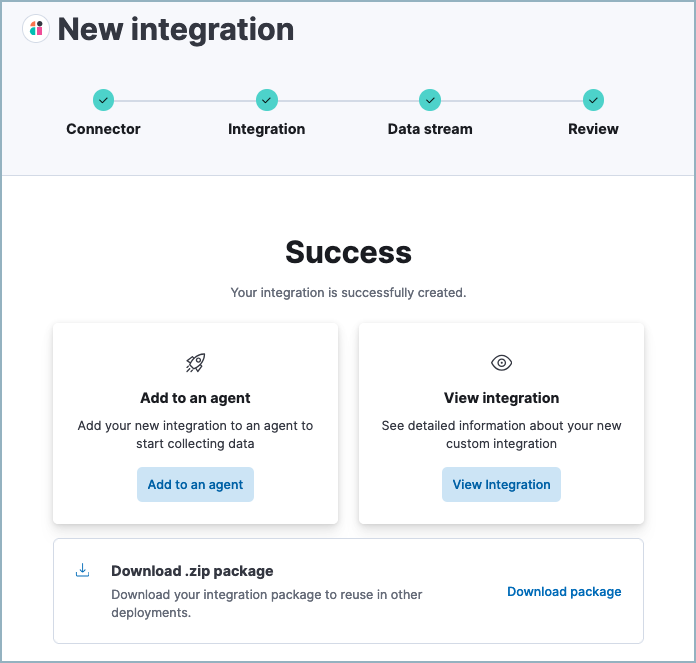

Automatic import
editAutomatic importedit
This feature is in technical preview. It may change in the future, and you should exercise caution when using it in production environments. Elastic will work to fix any issues, but features in technical preview are not subject to the support SLA of GA features.
Automatic Import helps you quickly parse, ingest, and create ECS mappings for data from sources that don’t yet have prebuilt Elastic integrations. This can accelerate your migration to Elastic Security, and help you quickly add new data sources to an existing SIEM solution in Elastic Security. Automatic Import uses a large language model (LLM) with specialized instructions to quickly analyze your source data and create a custom integration.
While Elastic has 400+ prebuilt data integrations, Automatic Import helps you extend data coverage to other security-relevant technologies and applications. Elastic integrations (including those created by Automatic Import) normalize data to the Elastic Common Schema (ECS), which creates uniformity across dashboards, search, alerts, machine learning, and more.
Click here to access an interactive demo that shows the feature in action, before setting it up yourself.
Using Automatic Import allows users to create new third-party data integrations through the use of third-party generative AI models (“GAI models”). Any third-party GAI models that you choose to use are owned and operated by their respective providers. Elastic does not own or control these third-party GAI models, nor does it influence their design, training, or data-handling practices. Using third-party GAI models with Elastic solutions, and using your data with third-party GAI models is at your discretion. Elastic bears no responsibility or liability for the content, operation, or use of these third-party GAI models, nor for any potential loss or damage arising from their use. Users are advised to exercise caution when using GAI models with personal, sensitive, or confidential information, as data submitted may be used to train the models or for other purposes. Elastic recommends familiarizing yourself with the development practices and terms of use of any third-party GAI models before use. You are responsible for ensuring that your use of Automatic Import complies with the terms and conditions of any third-party platform you connect with.
Create a new custom integrationedit
- In Elastic Security, click Add integrations.
-
Under Can’t find an integration? click Create new integration.

- Click Create integration.
- Select an Amazon Bedrock connector.
- Define how your new integration will appear on the Integrations page by providing a Title, Description, and Logo. Click Next.
- Define your integration’s package name, which will prefix the imported event fields.
- Define your Data stream title, Data stream description, and Data stream name. These fields appear on the integration’s configuration page to help identify the data stream it writes to.
- Select your Data collection method. This determines how your new integration will ingest the data (for example, from an S3 bucket, an HTTP endpoint, or a file stream).
-
Upload a sample of your data in JSON or NDJSON format. Make sure to include all the types of events that you want the new integration to handle.
- Click Analyze logs, then wait for processing to complete. This may take several minutes.
-
After processing is complete, the pipeline’s field mappings appear, including ECS and custom fields.

-
(Optional) After reviewing the proposed pipeline, you can fine-tune it by clicking Edit pipeline. Refer to the Elastic Security ECS reference to learn more about formatting field mappings. When you’re satisfied with your changes, click Save.

-
Click Add to Elastic. After the Success message appears, your new integration will be available on the Integrations page.
 - Click Add to an agent to deploy your new integration and start collecting data, or click View integration to view detailed information about your new integration.
Once you’ve added an integration, you can’t edit any details other than the ingest pipeline, which you can edit by going to Stack Management → Ingest Pipelines.
You can use the Data Quality dashboard to check the health of your data ingest pipelines and field mappings.